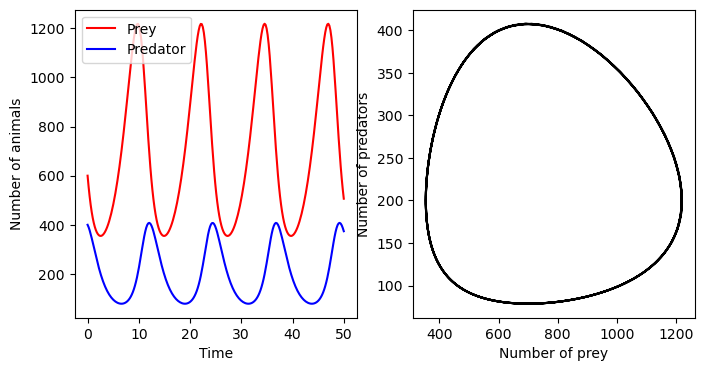

Python 求解常微分方程
JupyterNotebook部分内容译自 Johansson, R. (2019). Ordinary Differential Equations. In: Numerical Python . Apress, Berkeley, CA. https://doi.org/10.1007/978-1-4842-4246-9_9
安装包
conda install numpy matplotlib scipy sympy常微分方程（ODE）
解析解
常微分方程（ODE）最简单的形式是 ，其中 是未知函数， 是已知的。
例一
一阶 ODE： 牛顿冷却定律，，初值为 。求解步骤如下
-
导入包
import numpy as np import matplotlib.pyplot as plt from scipy import integrate import sympy sympy.init_printing() # 初始化其屏幕打印系统 -
使用
sympy.symbols定义符号 , 使用sympy.Function定义函数t, k, T0, Ta = sympy.symbols('t, k, T_0, T_a') # 定义符号 T = sympy.Function('T') # 定义函数 -
定义ode表达式（公式写成 的形式），使用
sympy.diff或diff方法对 表达式进行求导ode = T(t).diff(t) + k * (T(t) - Ta) # 定义 ode 表达式 print(ode) # k*(-T_a + T(t)) + Derivative(T(t), t) -
sympy.dsolve求解 ODE 的一般解
ode_sol = sympy.dsolve(ode) # 求解 ode
print(ode_sol) # Eq(T(t), C1*exp(-k*t) + T_a)-
利用初始条件求解未知的积分常数
print(ode_sol.lhs) # 求解 ode 的 ode_sol 的左侧 T(t) print(ode_sol.rhs) # 求解 ode 的 ode_sol 的右侧 C1*exp(-k*t) + T_a ics = {T(0): T0} # 初始条件 C_eq = sympy.Eq(ode_sol.lhs.subs(t, 0).subs(ics), ode_sol.rhs.subs(t, 0)) print(C_eq) # Eq(T_0, C1 + T_a) C_sol = sympy.solve(C_eq) # 求解未知的积分常数 print(C_sol) # [{C1: T_0 - T_a}] -
带入求得的积分常数至 ODE 的一般解中
ode_solve = ode_sol.subs(C_sol[0]) print(ode_solve) # Eq(T(t), T_a + (T_0 - T_a)*exp(-k*t))
以上内容可以归纳成函数
def apply_ics(sol, ics, x, known_params):
"""
Apply the initial conditions (ics), given as a dictionary on
the form ics = {y(0): y0, y(x).diff(x).subs(x, 0): yp0, ...},
to the solution of the ODE with independent variable x.
The undetermined integration constants C1, C2, ... are extracted
from the free symbols of the ODE solution, excluding symbols in
the known_params list.
"""
free_params = sol.free_symbols - set(known_params)
eqs = [(sol.lhs.diff(x, n) - sol.rhs.diff(x, n)).subs(x, 0).subs(ics)
for n in range(len(ics))]
sol_params = sympy.solve(eqs, free_params)
return sol.subs(sol_params)print(ode_sol) # Eq(T(t), C1*exp(-k*t) + T_a)
ode_solve = apply_ics(ode_sol, ics, t, [k, Ta])
print(ode_solve) # Eq(T(t), T_a + (T_0 - T_a)*exp(-k*t))例二
二阶 ODE：阻尼谐振子， ，其中 是振荡器在 时刻的位置， 是无阻尼情况的频率， 是阻尼比，初始条件 振荡器对任意 的动力学解。然而，将对应于临界阻尼的 直接代入该表达式会导致 division by zero 错误，对于 的这种特殊选择，需要小心计算 时的极限。
t, omega0, gamma = sympy.symbols("t, omega_0, gamma", positive=True) # 定义符号
x = sympy.Function('x') # 定义函数
ode = x(t).diff(t, 2) + 2 * gamma * omega0 * x(t).diff(t) + omega0 ** 2 * x(t) # 定义 ode 表达式
ode_sol = sympy.dsolve(ode) # 求解 ODE 的一般解
print(ode_sol)
ics = {x(0): 1, x(t).diff(t).subs(t, 0): 0} # 利用初始条件求解未知的积分常数
x_t_sol = apply_ics(ode_sol, ics, t, [omega0, gamma])
print(x_t_sol)数值解
使用 SciPy 求解 ODE 数值微分
捕食者和猎物动物种群动力学的 Lokta-Volterra 方程式。方程式为： 和 其中 是猎物的数量， 是捕食者的数量，系数 和 描述模型中过程的速率。如， 是猎物出生的速度， 是捕食者死亡的速度。 和 分别是捕食者消耗猎物的速率和捕食者种群以猎物种群为代价增长的速度。请注意，由于 项，这是一个非线性系统。
为了用 odeint 求解这个问题，我们首先需要为向量形式的 ODE 右侧写一个函数。对于这种情况，我们有 ，我们可以通过以下方式将它作为 Python 函数实现：
定义初值为 和 的数组 ，以及一个希望在该点处计算 ODE 解的点数组 。这里使用初始条件 和 ，对应于模拟开始时的 只猎物和 只捕食者。
import numpy as np
import matplotlib.pyplot as plt
from scipy import integrate
import sympy
sympy.init_printing() # 初始化其屏幕打印系统
a, b, c, d = 0.4, 0.002, 0.001, 0.7
def f(xy, t):
x, y = xy
return [a * x - b * x * y, c * x * y - d * y]
xy0 = [600, 400]
t = np.linspace(0, 50, 250)
xy_t = integrate.odeint(f, xy0, t)
xy_t.shape
fig, axes = plt.subplots(1, 2, dpi=200, figsize=(8, 4))
axes[0].plot(t, xy_t[:, 0], 'r', label="Prey")
axes[0].plot(t, xy_t[:, 1], 'b', label="Predator")
axes[0].set_xlabel("Time")
axes[0].set_ylabel("Number of animals")
axes[0].legend()
axes[1].plot(xy_t[:, 0], xy_t[:, 1], 'k')
axes[1].set_xlabel("Number of prey")
axes[1].set_ylabel("Number of predators")
其他示例
import numpy as np
from scipy import integrate
import matplotlib.pyplot as plt
def func(y, t):
return t * np.sqrt(y)
YS = integrate.odeint(func, y0=1, t=np.arange(0, 10.1, 0.1))
t = np.arange(0, 10.1, 0.1)
plt.figure(dpi=200)
plt.plot(t, YS, label='odeint')
plt.legend()
plt.show()from scipy.integrate import odeint
import numpy as np
def lorenz(w, t, p, r, b):
# 给出位置矢量w，和三个参数p, r, b计算出
# dx/dt, dy/dt, dz/dt的值
x, y, z = w
# 直接与lorenz的计算公式对应
return np.array([p * (y - x), x * (r - z) - y, x * y - b * z])
t = np.arange(0, 30, 0.01) # 创建时间点
# 调用ode对lorenz进行求解, 用两个不同的初始值
track1 = odeint(lorenz, (0.0, 1.00, 0.0), t, args=(10.0, 28.0, 3.0))
track2 = odeint(lorenz, (0.0, 1.01, 0.0), t, args=(10.0, 28.0, 3.0))
# 绘图
from mpl_toolkits.mplot3d import Axes3D
import matplotlib.pyplot as plt
fig = plt.figure(dpi=200)
ax = Axes3D(fig)
ax.plot(track1[:, 0], track1[:, 1], track1[:, 2])
ax.plot(track2[:, 0], track2[:, 1], track2[:, 2])
plt.show()